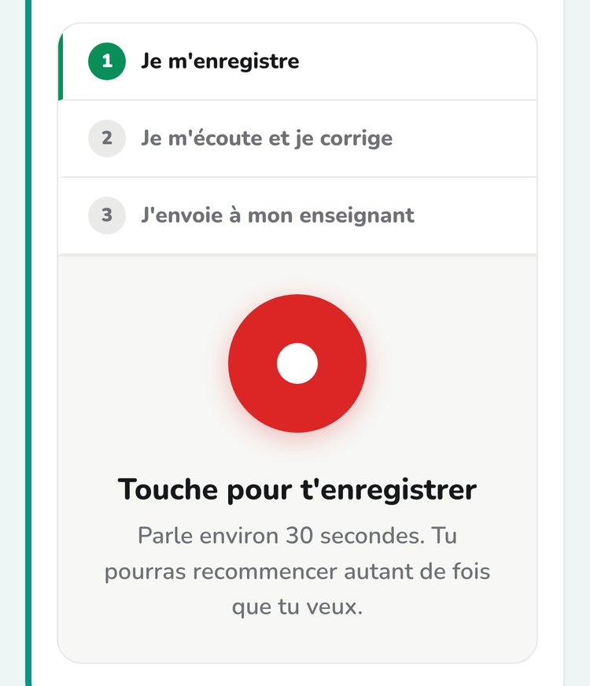
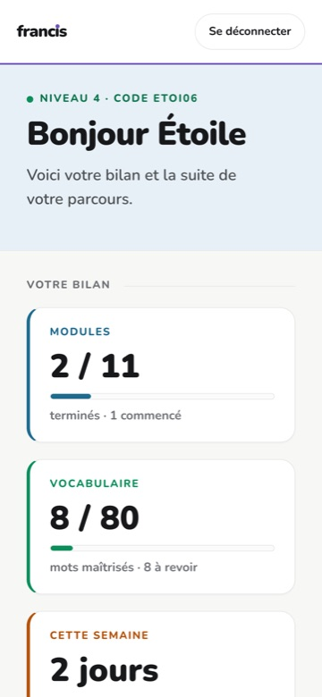

Bibliothèque de francisation · 31 août 2026
Deux versions prêtes à envoyer, l'image que je retiens, et les quatre choix que j'ai faits en les écrivant. Le courriel n'a pas à convaincre — il a à faire cliquer. Ce qui convainc est déjà écrit dans le guide pour la direction.
Une direction lit ses courriels sur son téléphone, entre deux réunions, en vingt secondes.
Tout ce qui est écrit pour être lu à tête reposée sera reporté à « plus tard », c'est-à-dire jamais. Le courriel doit donc tenir en quatre paragraphes, offrir une chose à essayer tout de suite, et demander quelque chose de si petit que refuser coûterait plus cher qu'accepter. Vingt minutes.
La forme
Un PDF ne s'ouvre pas d'une main dans un corridor. Il déplace la lecture vers un moment qui ne vient pas, et dans plusieurs centres de services il ajoute un avertissement de sécurité au-dessus du message. Deux liens font le même travail, tout de suite — et le guide est déjà une page web.
Outlook bloque les images distantes par défaut : six vignettes deviennent six rectangles vides. Et six vignettes, même affichées, font une infolettre — or une infolettre se classe, elle ne se lit pas. Une image, avec un texte de remplacement qui dit la même chose si elle ne s'affiche pas.
Nommer l'intelligence artificielle dans les deux premières lignes déclenche le réflexe Loi 25 avant que la direction ait vu la moindre valeur. On la nomme quand même, au troisième paragraphe, et d'une façon qui la retourne : c'est un interrupteur qui lui appartient. Une inquiétude devient une prise.
Ni un projet-pilote, ni un budget, ni une réunion d'équipe. Vingt minutes d'écran partagé. C'est la seule demande à laquelle une direction peut dire oui sans consulter personne — et la démonstration fait le reste.
L'image
Les deux candidates sérieuses. La première dit la thèse du projet en un coup d'œil ; la seconde dit la conformité sans la revendiquer.

Production orale — à retenir. Les trois lignes disent tout : je m'enregistre · je m'écoute et je corrige · j'envoie à mon enseignant. Et la phrase sous le bouton — tu pourras recommencer autant de fois que tu veux — prouve le deuxième paragraphe du courriel au lieu de le promettre. Capture cadrée exprès sur le panneau, à 375 px : la page entière ne sert à rien ici.

Le portail — pour la version formelle. « Bonjour Étoile · code ETOI06 » : la règle du pseudonyme se voit, au lieu d'être promise. Utile si le destinataire est un centre de services plutôt qu'une direction d'école — mais elle montre un tableau de bord, pas un élève qui apprend.
La contrainte n'est pas la largeur de l'image. C'est sa hauteur.
Une capture de téléphone entière fait 620 px de haut une fois posée dans un courriel de 640 px de large. Elle avale le message et pousse les deux liens — la seule chose que le courriel doit obtenir — sous la ligne de flottaison. L'image tue alors le clic qu'elle devait provoquer.
La règle : 300 px de large et 360 px de haut au maximum. Ce qui veut dire qu'on ne montre jamais un écran entier, mais la seule zone qui porte l'argument — ici le panneau d'enregistrement, cadré à la prise de vue plutôt que rogné après coup.
On la place après le deuxième paragraphe, jamais en tête : une image en ouverture est la signature visuelle d'un envoi de masse. Et toujours avec son texte de remplacement, puisqu'Outlook ne l'affichera pas d'emblée.
Version A
Celle du centre où vous enseignez. Le lien de confiance existe déjà : le courriel peut être direct et court.
Bonjour [prénom],
J'ai construit une bibliothèque de cours de francisation pour adultes, alignée sur le programme d'études du Ministère. Elle couvre les huit niveaux : 86 modules, les 85 situations de vie du programme, et les fiches papier de chaque séance.
Ce qu'elle règle, c'est le mur de nos classes — l'élève qui n'ose pas parler. Il s'exerce à l'oral sans témoin, autant de fois qu'il veut, et n'envoie son enregistrement que lorsqu'il le décide.
[image : production orale]
Vous pouvez l'essayer maintenant, sans compte, comme un élève. Dix minutes :
portail.edufrancis.ca/modules-autonomes/le-on-quebecois/
Deux choses vous appartiendraient avant toute mise en service : la durée de
conservation des travaux, et l'ouverture — ou non — de l'assistance automatisée.
Les deux se règlent dans un écran. J'ai écrit ce que ça implique ici :
portail.edufrancis.ca/assets/presentations/guide-direction.html
Auriez-vous vingt minutes dans les prochaines semaines ? Je vous montre le reste en direct.
[Prénom Nom]
[titre], [centre]
152 mots · 2 liens · 1 image
Version B
Un autre centre, ou un centre de services. Il faut établir en une phrase d'où vous parlez, et donner les chiffres qui font qu'on ne classe pas le message.
Madame, Monsieur,
J'enseigne la francisation à [centre]. J'ai développé, et mis en service, une bibliothèque de cours couvrant les huit niveaux du programme d'études ministériel : 86 modules de 64 heures, 90 ateliers, les 85 situations de vie du programme, et le matériel papier de chaque séance.
Le contenu est entièrement original — aucun manuel n'est reproduit, ni en texte ni en structure d'exercices. Le coût d'exploitation est de 0,08 $ par élève et par module.
[image : production orale]
Un cours s'ouvre sans compte, comme le verrait un élève :
portail.edufrancis.ca/modules-autonomes/le-on-quebecois/
Le document écrit pour les directions — ce qui reste à décider, le cadre de la
Loi 25, le coût réel — est ici :
portail.edufrancis.ca/assets/presentations/guide-direction.html
Si le sujet vous intéresse, je peux vous présenter la plateforme en vingt minutes, ou en discuter avec la personne que vous désignerez.
Veuillez agréer, Madame, Monsieur, mes salutations distinguées.
[Prénom Nom]
[titre], [centre]
[téléphone]
153 mots · 2 liens · 1 image
L'objet
Avant d'envoyer